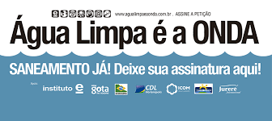
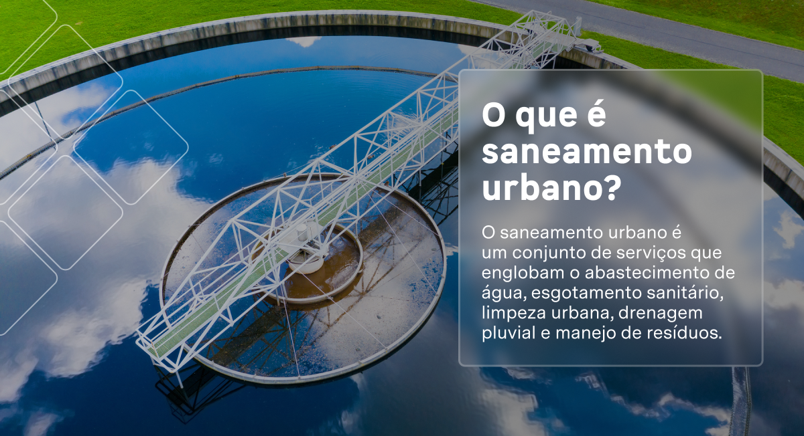
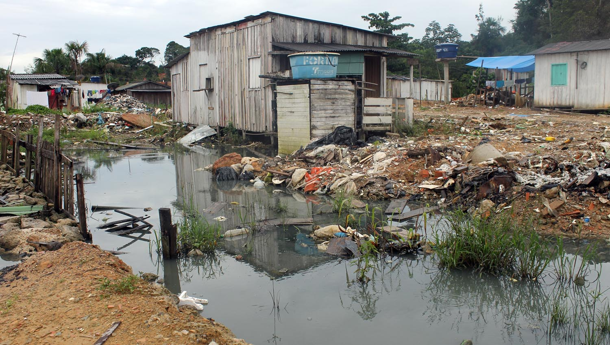
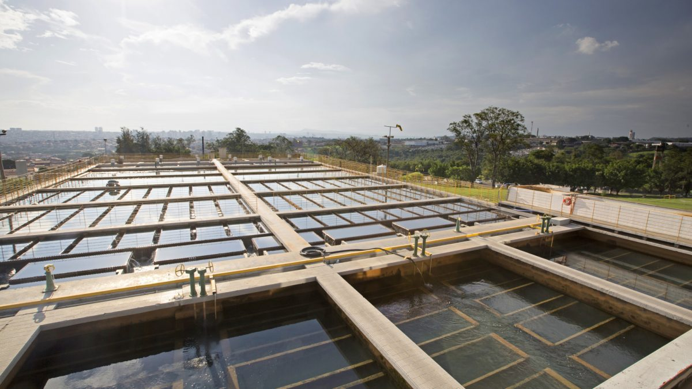
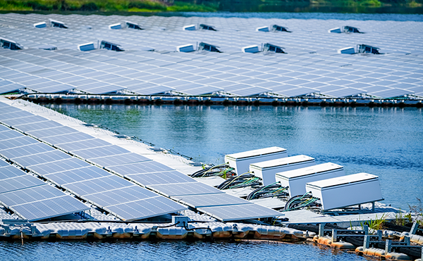
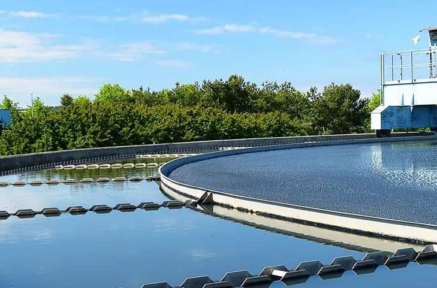
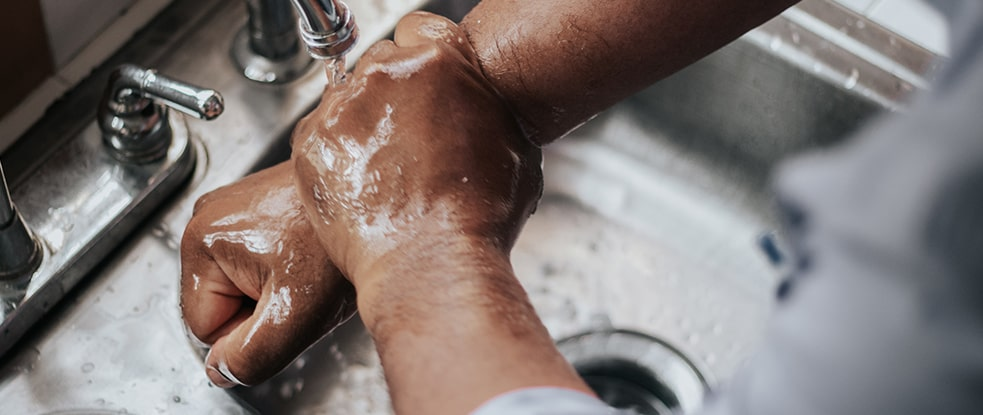

.jpg)
E SEMPRE BOM MANTERMOS NOSSO AMBIENTE LIMPO, POR ISSO NUNCA DEIXA AGUA PARADA.
A economia de água, além de reduzir o valor da sua conta no final do mês e de poupar gastos da companhia com captação, tratamento e distribuição, tem efeito na sustentabilidade.
Isso porque a água, apesar de ser um recurso renovável, está cada vez mais escassa na forma potável.
ASSINE DE TODAS AS FORMAS, TEMOS CONTEUDOS E OTIMAS VARIAÇAO DE PREÇOS
AGUA NAO TRATADA LEVA SUA SAUDE A MIL
QUANDO TIVEREM INTERESSE, SO ENTRAR EM CONTATO CONOSCO. QUE JA RESOLVEMOS O CASO DE VOCES
e muito importante deixar os ensinamentos para nossos aprendizes, acho muito importante eles terem um ensinamento como esse
aqui tambem estao alguns que fizeram o curso e que gostaram do aproveito
De acordo com o último relatório de evolução dos ODS publicado pela ONU em 2023, 2,2 bilhões de pessoas continuam sem acesso à água potável, incluindo 703 milhões sem um serviço básico de água. Além disso, 3,5 bilhões de pessoas pessoas carecem de saneamento, das quais 1,5 bilhão não têm instalações sanitárias básicas. Em termos de instalações, 2 bilhões de pessoas não têm uma instalação básica para lavar as mãos com água e sabão em suas casas, incluindo 653 milhões que não têm nenhuma instalação para algo tão básico como lavar as mãos. Para alcançar a cobertura universal até 2030, é necessário triplicar ou aumentar em seis vezes as taxas atuais de progresso.
Outro dado importante relacionado ao ODS 6 é o estresse hídrico —a relação entre a água doce extraída e o total de recursos renováveis de água doce—. Mundialmente, essa relação permanece em um nível seguro de 18,2%, mas as variações regionais são relevantes. A Ásia Central e o Sul da Ásia apresentam altos níveis de estresse hídrico, superiores a 75%, e o Norte da África enfrenta um estresse hídrico crítico superior a 100%. Estima-se que 2,4 bilhões de pessoas vivam em países com estresse hídrico, dos quais quase 800 milhões estão em países com estresse hídrico alto e crítico.
essa realidade se converteu em um objetivo primordial em âmbito internacional. Por isso, garantir a disponibilidade da água e sua gestão sustentável, assim como o saneamento para todos, é o ODS 6 dos 17 Objetivos de Desenvolvimento Sustentável da ONU, aprovados em setembro de 2015 como parte da Agenda 2030.
um conjunto de serviços que englobam o abastecimento de água, esgotamento sanitário, limpeza urbana, drenagem pluvial e manejo de resíduos.
Ou seja, são infraestruturas e atividades básicas que impulsionam o desenvolvimento socioeconômico de uma região.
abastecimento de água potável; esgotamento sanitário; limpeza urbana e manejo de resíduos sólidos; e drenagem e manejo das águas pluviais urbanas.
O saneamento básico compreende os serviços de abastecimento de água; coleta e tratamento de esgotos; limpeza urbana, coleta e destinação do lixo; e drenagem e manejo da água das chuvas.
A água tratada que é consumida nas casas passa por um longo percurso antes de despontar na boca da torneira. Nas cidades que contam com uma rede de abastecimento adequada, a água é captada nos mananciais e submetida a diversos procedimentos de filtragem e desinfecção, para só então ser distribuída para as residências. São as chamadas etapas do tratamento da água
A realização de um processo de tratamento desde a captação em rios, lagos ou poços é fundamental, principalmente para a saúde da população. Isso porque, com frequência, a água dos mananciais está contaminada por vírus, bactérias e impurezas capazes de disseminar inúmeras doenças, que vão desde cólera até gastroenterite.
O ideal é que o ciclo de saneamento não pare no abastecimento. Nas cidades que já contam com rede de esgoto, os resíduos da água que foi utilizada em casas e residências escoam para uma rede de coleta e depois para a estação de tratamento de esgoto, onde passam por novas etapas de higienização e podem ser lançados de volta ao ambiente sem causar danos à natureza.
Cada município adota diferentes técnicas para realizar o seu tratamento de água, de acordo com as características e necessidades específicas de sua rede de abastecimento. Quando a captação acontece em poços, o tratamento é mais simplificado, com a adição de flúor, para prevenção à cárie, e de cloro, para destruir microrganismos causadores de doenças.
Nos casos em que a captação é realizada em rios e lagos, o mais frequente é que a água seja direcionada para uma estação de tratamento de água (ETA). Por aqui, reunimos as etapas de tratamento da água mais frequentes dentro do funcionamento de uma ETA — nem sempre todos eles são necessários, e a estrutura do tratamento é moldada conforme a qualidade dos mananciais —, para que você conheça pelo menos um pedaço do caminho que a água faz até chegar à sua casa.
vCom esse recurso, nossos apoiadores podem mensurar a rentabilidade de seu investimento social. A proposta é entregar o máximo de transparência dentro de um simulador que apresenta o retorno sobre o investimento social esperado.
Atuação comprovada de impacto social, contribuindo para a sustentabilidade do ESG.
Uma página de Empresa Apoiadora no site do Instituto Livres com geração de backlinks, inclusão de informações da empresa em uma newsletter, divulgação na imprensa sobre a parceria com geração de reputação e enviada nacionalmente
Ingresso ao ecossistema do Instituto Livres com acesso a comunicações exclusivas destinadas aos parceiros.
 lavar as mãos e higienizar objetos com frequência é uma das principais formas de combate ao novo coronavírus. Já pensou não ter acesso à água limpa e banheiros seguros para conseguir realizar essas tarefas? Como se proteger? Os serviços de saneamento são essenciais para a promoção da saúde em uma sociedade
segundo dados do Instituto Trata Brasil, cada R$1,00 investido em saneamento acaba gerando R$4,00 de economia na saúde. Ou seja, ações de saneamento têm influência direta na prevenção de doenças. O contato com esgoto e o consumo de água sem tratamento também está ligado à altas taxas de mortalidade infantil. A principal causa são doenças como parasitoses, diarréias, febre tifóide e leptospirose. O estudo realizado pelo Instituto Trata Brasil averiguou que municípios com esgotamento inadequado têm também as maiores taxas de hospitalização por diarréia, e crianças consistem em mais de 50% das internações.
A relação entre saúde pública e o tratamento de água e esgoto é tão intrínseca que, no Brasil, a vigilância e o controle sobre a qualidade da água s ão atribuições do Sistema Único de Saúde, o SUS.
Por isso, se os países membros das Nações Unidas conseguirem cumprir as metas propostas pelo ODS 6 da ONU – Água Potável e Saneamento, também estarão dando um grande passo para a promoção da Saúde e do Bem-estar da população mundial. Confira quais são as metas até 2030:
A água potável deve ser preferencialmente incolor, inodora e possuir sabor agradável ao paladar. Partículas de origem orgânica, tais como ácidos húmicos e fúlvicos, e de origem mineral tais como resíduos industriais, compostos de ferro e manganês são algumas das responsáveis pela coloração de águas naturais. A cor da água pode variar de acordo com as substâncias nela presentes: se rica em manganês a cor é negra, se rica em ferro avermelhada e se rica em ácidos húmicos a cor é amarelada.
Pode-se constatar eventualmente a ocorrência de cor branca ou turva na água que sai das torneiras. Trata-se de hipótese em que existe ar dissolvido na água com formação de pequenas bolhas, originado pelas oscilações de pressão nas tubulações ou nos reservatórios de água. Esta aparência esbranquiçada é pontual e passageira, não afetando a qualidade da água.
A água potável deve possuir sabor agradável ao paladar dos consumidores. As alterações ao sabor da água são o motivo maior de reclamações. Uma das causas de alteração de sabor é a presença de cloro. Em águas tratadas com cloro (com o objetivo de eliminar bactérias e outros microrganismos que possam contaminar a água na rede pública) pode ocorrer a reação do cloro com matéria orgânica e causar odores e sabores devido à formação de certos compostos
Já a turbidez é a característica física que indica as partículas que impedem a passagem de luz pela água, ficando em suspensão. As partículas podem ser de areia, restos de folha e até mesmo seres vivos como algas, protozoários e bactérias que além de turbidez, também podem causar à água cor, sabor e odor.
A erosão, o escoamento de água de locais impermeabilizados nas cidades e a contaminação proveniente de zonas de mineração são os principais fatores que alteram a turbidez da água.
Certo é que a cor, odor, sabor e turbidez afetam as percepções e os comportamentos dos consumidores de água. Embora as diretrizes para a potabilidade da água estejam previstas em regras próprias do Ministério da Saúde, não há garantia de que os consumidores estarão satisfeitos com o abastecimento de água que atendem a esse regramento.
Para o consumo humano, o padrão de potabilidade exige que a água seja completamente inodora. O odor na água é devido, principalmente, pela presença de substâncias orgânicas, sendo que certos odores são indicativos de aumento da atividade biológica. O odor também é uma das formas de averiguar a existência de certos produtos químicos na água e podem ser indicativos de poluição industrial. Substâncias químicas tóxicas como clorobenzenos, clorofenóis, fenóis e sulfeto de hidrogênio apresentam odores bem característicos.
O pH representa a intensidade das condições ácidas ou alcalinas do meio líquido, por meio da medição da concentração de íons hidrogênio. Este fator é de grande importância, principalmente nos processos de tratamento de água
O valor do pH varia de 0 a 14 em escala, sendo condições ácidas inferior a 7 e alcalinas superior a 7. A água, como substância pura, possui pH neutro, ou seja, igual a 7
O pH da água pode indicar possíveis contaminações químicas e tem implicação sobre a qualidade da água destinada ao consumo humano. O intervalo de pH para águas de abastecimento público deve estar na faixa entre 6.0 a 9.5. Este parâmetro tem por objetivo minimizar os problemas de incrustação e corrosão das redes de distribuição
A dureza da água é uma característica química que indica o teor de sais de cálcio, magnésio, ferro, manganês, estrôncio e alumínio com a inclusão dos carbonatos, sulfatos, cloreto de cálcio e cloreto de magnésio. A dureza, da mesma forma que a acidez, também pode ter origem natural, como, por exemplo, a dissolução de rochas calcárias, ricas em cálcio e magnésio ou pode ter origem pela ação do homem como no caso do lançamento de efluentes industriais. As águas de dureza elevada provocam incrustações nas tubulações de água quente, caldeiras e aquecedores e também reduzem a formação de espuma, gerando, por consequência um maior consumo de sabões e xampus
Dentre as características biológicas da água, destacam-se os Coliformes, que são indicadores de presença de microrganismos patogênicos na água e as Algas, que em grandes quantidades trazem inconvenientes como odor, sabor, cor, turbidez e toxidez, interferindo, inclusive nos processos de tratamento de água.
No Brasil, o padrão de potabilidade vigente está estabelecido na Portaria de Consolidação nº 5 do Ministério da Saúde, que consolidou as normas sobre as ações e os serviços de saúde do Sistema Único de Saúde. O Anexo XX da referida Portaria de Consolidação dispõe sobre os procedimentos e as responsabilidades relativos ao controle e à vigilância da qualidade da água para consumo humano e seu padrão de potabilidade.